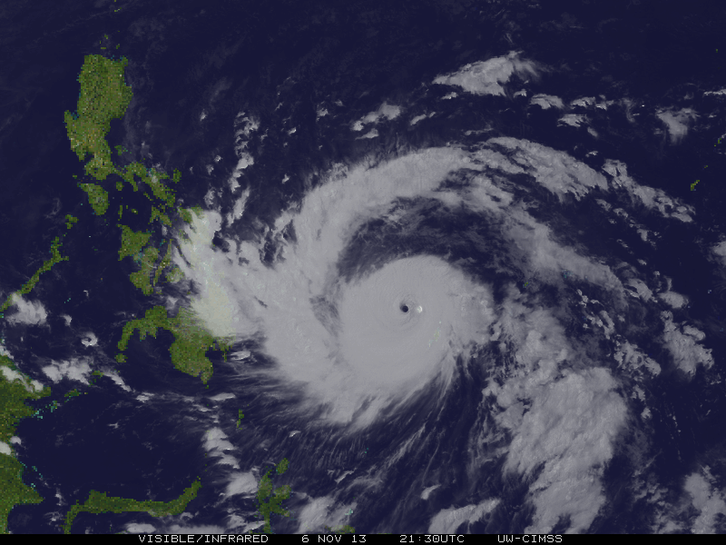
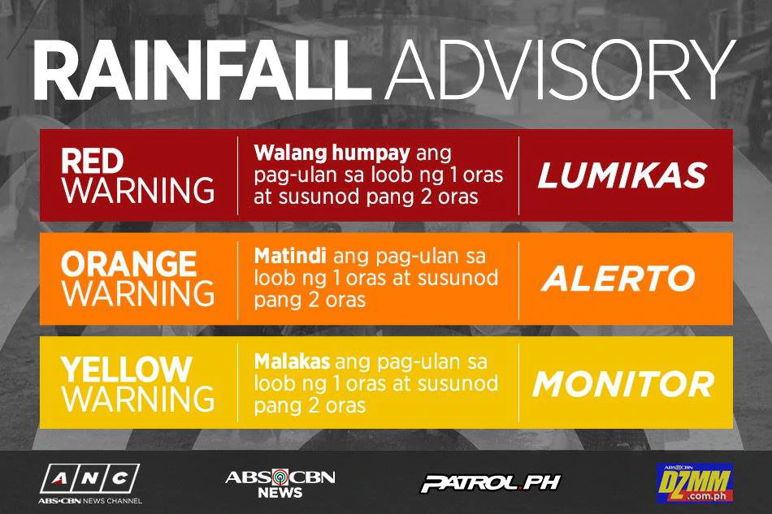
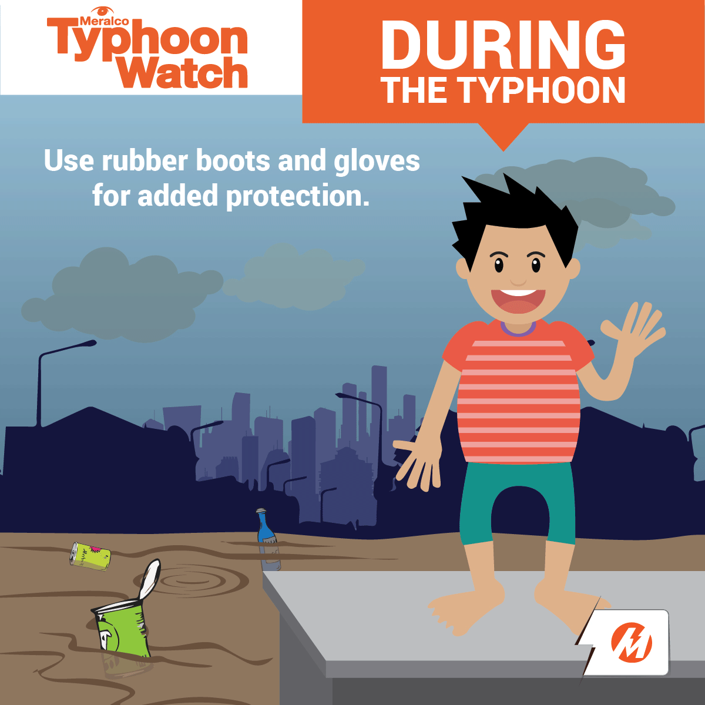

|
|
ALITAGTAG MDRRMO |


Storm Signal
When any Public Storm Warning Signal Number is hoisted or put in effect for the first time, the corresponding meteorological conditions are not yet prevailing over the locality. This is because the purpose of the signal is to warn the impending occurrence of the given meteorological conditions. It must be noted also that the approximate lead time to expect the range of the wind speeds given for each signal number is valid only when the signal number is put in effect for the first time.
Thus, the associated meteorological conditions are still expected in at least 36 hours when PSWS #1 is put in effect initially; in at least 24 hours with PSWS #2; in at least 18 hours with PSWS #3, in at least 12 hours with PSWS #4; and in at least 12 hours with PSWS #5. The lead time shortens correspondingly in the subsequent issues of the warning bulletin when the signal number remains in effect as the tropical cyclone comes closer.
It is also important to remember that tropical cyclones are constantly in motion; generally towards the Philippines when PAGASA is issuing the warning.
Therefore, the Public Storm Warning Signal Number over a threatened/ affected locality may be sequentially upgraded or downgraded.
This means that PSWS #1 may be be upgraded to PSWS #2, then to PSWS #3, PSWS #4 and to PSWS #5 as necessary when a very intense typhoon is approaching or downgraded when the typhoon is moving away.
However, in case of rapid improvement of the weather condition due to the considerable weakening or acceleration of speed of movement of the tropical cyclone moving away from the country, the downgrading of signal may jump one signal level. For example, PSWS #3 may be downgraded to PSWS #1 or all signals from PSWS #2 may be lowered.
The delineation of areas for a given signal number is based on the intensity, size of circulation and the forecast direction and speed of movement of the tropical storm or typhoon at the time of issue of the warning bulletin. The change in intensity, size of circulation or movement of the tropical cyclone also determines the change in the PSWS number over a given locality.
A General Flood Advisory is simplified flood bulletin issued for non-telemetered river basins whenever there is a significant amount of rainfall recorded based on past/current observation and the forecast rainfall from the numerical weather prediction models, satellite based information and estimates from radar. It is issued to the public on a regional basis through NDRRMC at 7:00am and 7:00pm
Telemetered River Basin
River Basins with fully automatic data transmission equipped with a telecommunication system.
Flood Bulletin
Flood forecast issued by the respective river basin centers like Pampanga, Agno, Bicol, Cagayan and Cagayan De Oro, prepared twice daily during floodwatch. Water level is monitored based on the assessment levels (Alert, Alarm and Critical) which means 40%, 60% and 100% of the river is full respectively.
Pagasa uses a new set of color-coded rainfall advisories composed of 3 colors: Yellow, Orange and Red. The darker the color is, the more dangerous it gets.
MGA DAPAT GAWIN
What to do during Public Storm Signal No. 1:
What to do during Public Storm Signal No. 2:
What to do during Public Storm Signal No. 3:
What to do during Public Storm Signal No. 4:
What to do during Public Storm Signal No. 5:
Preparation for Calamities particularly Flooding
Visit me on Facebook:
 Julius Castillo IV
Julius Castillo IV